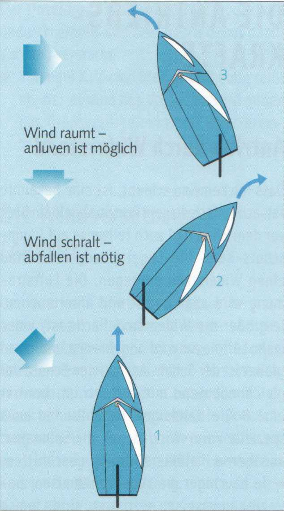
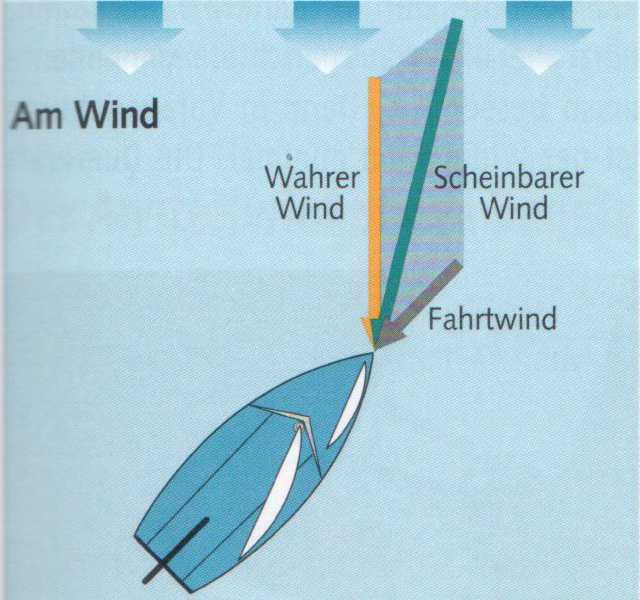
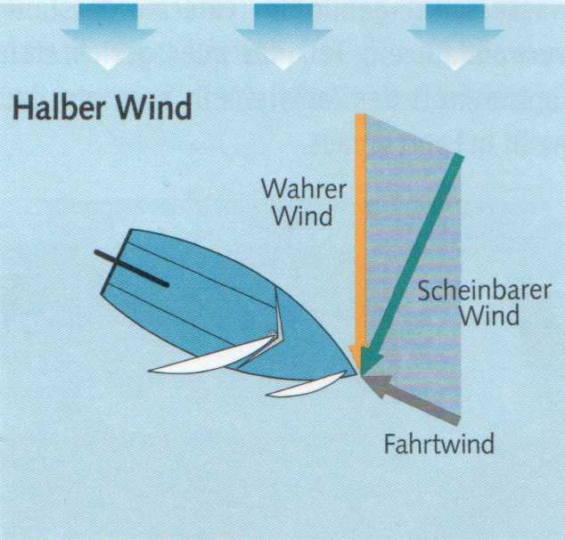
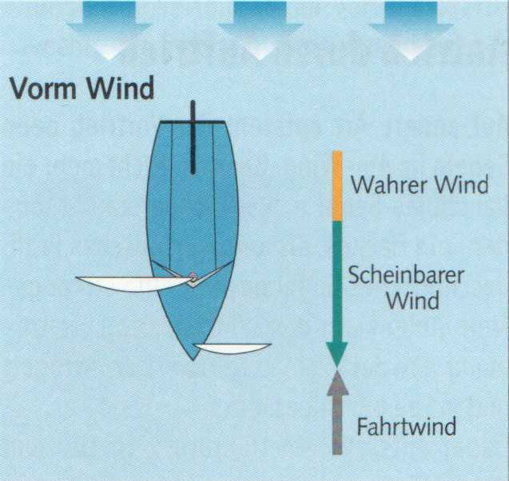

Der tatsächlich wehende Wind ist der wahre Wind. Seine Richtung und Stärke (Geschwindigkeit) kann man nur an einem festen Punkt feststellen oder messen. Auf einem Boot, solange es am Steg oder vor Anker liegt. Sobald es jedoch Fahrt aufnimmt, werden Richtung und Stärke des wahren Windes durch den Fahrtwind beeinflusst. Der wahre Wind wandelt sich zum scheinbaren Wind. Nur dieser ist an Bord spürbar und maßgeblich für die Kurse. Nur die Richtung des scheinbaren Windes zeigt der Verklicker auf dem Masttopp an.
Je schneller ein Boot segelt, umso stärker wird der Fahrtwind und umso mehr weicht die Richtung des scheinbaren Windes von der des wahren Windes ab.
► Der scheinbare Wind fällt stets vorlicher ein als der wahre, ausgenommen auf Vorm-Wind-Kurs. Man segelt scheinbar höher am Wind als »wirklich«.
► Je mehr ein Boot anluvt, umso stärker wird der scheinbare Wind, je mehr es abfällt, umso mehr nimmt er ab.
Raumen bedeutet, dass der Wind nach einer Richtungsänderung weiter von achtern und somit günstiger einfällt, schralen, dass er vorlicher, also ungünstiger einfällt. Wer am Wind segeln will (1), muss bei schralendem Wind von seinem Kurs abfallen (2), bei räumendem kann er anluven (3) und so mehr Höhe heraussegeln. Die Ursachen für diese Erscheinung sind unterschiedlich. Einmal schwankt der wahre Wind in seiner Richtung. Zum anderen kann die Geschwindigkeit des Bootes zunehmen, sodass der scheinbare Wind vorlicher einfällt, also schralt.

Auswirkungen des Fahrtwindes

Am Wind fällt der scheinbare Wind am vorlichsten ein und weht wesentlich stärker als der wahre Wind.

Halber Wind: Der scheinbare Wind ist merklich schwächer geworden. Er fällt zwar immer noch vorlicher als der wahre Wind ein, erreicht aber nicht mehr dessen Stärke.

Vor dem Wind fallen wahrer und scheinbarer Wind zusammen.